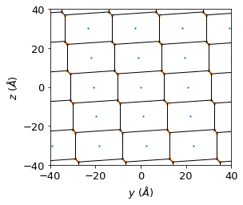

Diffusion anisotropy#
Import packages#
import pandas as pd
import numpy as np
import matplotlib.pyplot as plt
from cage_data import cage1_info
from fishmol.utils import vector, Arrow3D, h_channel, calc_freq
from fishmol import msd
from fishmol import style
Load water CoM data#
water_com = pd.read_excel("test/cage1-500K-water-com.xlsx", header=0, index_col=0, engine = "openpyxl")
water_com.head()
| water1_x | water1_y | water1_z | water2_x | water2_y | water2_z | water3_x | water3_y | water3_z | water4_x | ... | water5_z | water6_x | water6_y | water6_z | water7_x | water7_y | water7_z | water8_x | water8_y | water8_z | |
|---|---|---|---|---|---|---|---|---|---|---|---|---|---|---|---|---|---|---|---|---|---|
| 0 | 10.586316 | 19.902134 | 10.380009 | 0.624155 | 10.923925 | 8.298079 | -1.967392 | 4.261146 | 12.241481 | 4.693672 | ... | 4.725172 | 15.090375 | 8.649502 | 6.883228 | 17.759366 | 15.321196 | 2.865725 | 11.019290 | 3.578953 | 0.703805 |
| 1 | 10.597616 | 19.945151 | 10.393126 | 0.617881 | 10.942585 | 8.312331 | -1.961926 | 4.253910 | 12.205821 | 4.689873 | ... | 4.745156 | 15.076014 | 8.640429 | 6.849210 | 17.749958 | 15.278667 | 2.889409 | 11.049146 | 3.587807 | 0.663123 |
| 2 | 10.610208 | 20.003821 | 10.408405 | 0.610859 | 10.967922 | 8.330438 | -1.953047 | 4.243309 | 12.156421 | 4.687198 | ... | 4.767198 | 15.058083 | 8.628816 | 6.804086 | 17.738720 | 15.225162 | 2.920655 | 11.086905 | 3.600664 | 0.608757 |
| 3 | 10.622718 | 20.062112 | 10.416761 | 0.604688 | 10.993416 | 8.349495 | -1.945208 | 4.229969 | 12.106099 | 4.687512 | ... | 4.786539 | 15.040753 | 8.617851 | 6.760128 | 17.728982 | 15.181476 | 2.948253 | 11.122864 | 3.614650 | 0.558271 |
| 4 | 10.636664 | 20.122749 | 10.416813 | 0.597829 | 11.020753 | 8.373153 | -1.941190 | 4.211549 | 12.054352 | 4.691621 | ... | 4.808036 | 15.020218 | 8.605213 | 6.714651 | 17.717884 | 15.151479 | 2.970079 | 11.155729 | 3.629731 | 0.511643 |
5 rows × 24 columns
Calculate 1D diffusion coefficient on a spherical meshgrid#
water_num = 8
vecs, ave_d = msd.proj_d(df = water_com, num = water_num)
Progress: [■■■■■■■■■■■■■■■■■■■■] 100.0%
data = np.concatenate((vecs, ave_d.reshape((len(vecs), 1))), axis = 1)
results = pd.DataFrame(columns = ["x", "y", "z", "mean_D"], data = data)
results.head()
| x | y | z | mean_D | |
|---|---|---|---|---|
| 0 | 1.224647e-16 | -7.498799e-33 | -1.000000 | 0.000017 |
| 1 | 5.277535e-02 | -3.231558e-18 | -0.998606 | 0.000018 |
| 2 | 1.054036e-01 | -6.454109e-18 | -0.994430 | 0.000019 |
| 3 | 1.577381e-01 | -9.658671e-18 | -0.987481 | 0.000020 |
| 4 | 2.096329e-01 | -1.283631e-17 | -0.977780 | 0.000022 |
results.to_excel("test/cage1-500K-aniso.xlsx")
cell= [
[21.2944000000, 0.0000000000, 0.0000000000],
[-4.6030371123, 20.7909480472, 0.0000000000],
[-0.9719093466, -1.2106211379, 15.1054299403]
]
diags = [[1,0,0],[0,1,0],[0,0,1]]
diags = [ vector(diag, cell = cell, name = "m") for diag in diags]
[diag.to_cart() for diag in diags]
[<fishmol.utils.vector at 0x7fd125c34c10>,
<fishmol.utils.vector at 0x7fd125c34bb0>,
<fishmol.utils.vector at 0x7fd125c34d00>]
x = vecs[:,0]*ave_d
y = vecs[:,1]*ave_d
z = vecs[:,2]*ave_d
# ave_d = data.iloc[:,3].to_numpy()
fig = plt.figure(figsize = (5, 4.6))
ax = fig.add_axes([0.0,0.04,0.90,0.96], projection='3d')
zdirs = (None,)*3
labels = ("$a$", "$b$", "$c$")
# ax.plot_trisurf(x, y, z, edgecolor ='none', cmap='PuBu', alpha=0.8)
ax.scatter3D(x, y, z, edgecolor ='none', marker = ".", color = "#08519c", alpha=0.3)
for i, axis in enumerate(diags):
axis = axis.array/15000
a = Arrow3D([0, axis[0]], [0, axis[1]], [0, axis[2]], mutation_scale=15,
lw=1, arrowstyle="-|>", color="#252525")
ax.add_artist(a)
ax.text(*axis, labels[i], zdirs[i])
idx = np.where(ave_d == np.amax(ave_d))
h_path = vecs[idx]*ave_d[idx]
a = Arrow3D(*zip(np.zeros(3), h_path[0]), mutation_scale=15,
lw=1, arrowstyle="-|>", color="#b2182b")
ax.add_artist(a)
ax.text(*h_path[0], "D$_{max}$", None)
ax.set_xlabel("$D_x$")
ax.set_ylabel("$D_y$")
ax.set_zlabel("$D_z$")
ax.ticklabel_format(axis='both', style='sci', scilimits=[-4,4], useMathText=True)
plt.savefig("test/cage1-aniso-500K.jpg", dpi = 600)
plt.show()
/tmp/ipykernel_3339671/2059225541.py:31: MatplotlibDeprecationWarning: The 'renderer' parameter of do_3d_projection() was deprecated in Matplotlib 3.4 and will be removed two minor releases later.
plt.savefig("test/cage1-aniso-500K.jpg", dpi = 600)
Voroni method to identify the diffusion channel of water molecules#
Cage 1 500 K#
The h-path is almost aligned with [100], and the following points used to devide channels
points = np.asarray([
(0, -3, -2), (0, -3, -1), (0, -3, 0), (0, -3, 1), (0, -3, 2), (0, -3, 3),
(0, -2, -3), (0, -2, -2), (0, -2, -1), (0, -2, 0), (0, -2, 1), (0, -2, 2), (0, -2, 3),
(0, -1, -3), (0, -1, -2), (0, -1, -1), (0, -1, 0), (0, -1, 1), (0, -1, 2), (0, -1, 3),
(0, 0, -3), (0, 0, -2), (0, 0, -1), (0, 0, 0), (0, 0, 1), (0, 0, 2), (0, 0, 3),
(0, 1, -3), (0, 1, -2), (0, 1, -1), (0, 1, 0), (0, 1, 1), (0, 1, 2), (0, 1, 3),
(0, 2, -3), (0, 2, -2), (0, 2, -1), (0, 2, 0), (0, 2, 1), (0, 2, 2), (0, 2, 3),
(0, 3, -2), (0, 3, -1), (0, 3, 0), (0, 3, 1), (0, 3, 2), (0, 3, 3)
], dtype = np.float64)
cell = cage1_info.cell
# The coordination the points will be projected to new coordinate system, where w3 is the h_path with the highest proton diffusivity
w1 = vector([0, 1, 0], cell = cell, name = "m")
w2 = vector([0, 0, 1], cell = cell, name = "m")
w3 = vector([1, 0, 0], cell = cell, name = "m")
W = np.asarray([globals()[f'w{i + 1}'].array for i in range(3)])
points_arrs = [vector(point, cell = cell) for point in points]
for point_arr in points_arrs:
point_arr.to_cart(normalise = False)
points = np.asarray([point.array for point in points_arrs])
points
array([[ 15.75293003, -59.95160187, -30.21085988],
[ 14.78102068, -61.162223 , -15.10542994],
[ 13.80911134, -62.37284414, 0. ],
[ 12.83720199, -63.58346528, 15.10542994],
[ 11.86529264, -64.79408642, 30.21085988],
[ 10.8933833 , -66.00470756, 45.31628982],
[ 12.12180226, -37.95003268, -45.31628982],
[ 11.14989292, -39.16065382, -30.21085988],
[ 10.17798357, -40.37127496, -15.10542994],
[ 9.20607422, -41.58189609, 0. ],
[ 8.23416488, -42.79251723, 15.10542994],
[ 7.26225553, -44.00313837, 30.21085988],
[ 6.29034618, -45.21375951, 45.31628982],
[ 7.51876515, -17.15908463, -45.31628982],
[ 6.54685581, -18.36970577, -30.21085988],
[ 5.57494646, -19.58032691, -15.10542994],
[ 4.60303711, -20.79094805, 0. ],
[ 3.63112777, -22.00156919, 15.10542994],
[ 2.65921842, -23.21219032, 30.21085988],
[ 1.68730907, -24.42281146, 45.31628982],
[ 2.91572804, 3.63186341, -45.31628982],
[ 1.94381869, 2.42124228, -30.21085988],
[ 0.97190935, 1.21062114, -15.10542994],
[ 0. , 0. , 0. ],
[ -0.97190935, -1.21062114, 15.10542994],
[ -1.94381869, -2.42124228, 30.21085988],
[ -2.91572804, -3.63186341, 45.31628982],
[ -1.68730907, 24.42281146, -45.31628982],
[ -2.65921842, 23.21219032, -30.21085988],
[ -3.63112777, 22.00156919, -15.10542994],
[ -4.60303711, 20.79094805, 0. ],
[ -5.57494646, 19.58032691, 15.10542994],
[ -6.54685581, 18.36970577, 30.21085988],
[ -7.51876515, 17.15908463, 45.31628982],
[ -6.29034618, 45.21375951, -45.31628982],
[ -7.26225553, 44.00313837, -30.21085988],
[ -8.23416488, 42.79251723, -15.10542994],
[ -9.20607422, 41.58189609, 0. ],
[-10.17798357, 40.37127496, 15.10542994],
[-11.14989292, 39.16065382, 30.21085988],
[-12.12180226, 37.95003268, 45.31628982],
[-11.86529264, 64.79408642, -30.21085988],
[-12.83720199, 63.58346528, -15.10542994],
[-13.80911134, 62.37284414, 0. ],
[-14.78102068, 61.162223 , 15.10542994],
[-15.75293003, 59.95160187, 30.21085988],
[-16.72483938, 58.74098073, 45.31628982]])
from scipy.spatial import voronoi_plot_2d
vor = h_channel(points[:,1:])
fig = voronoi_plot_2d(vor)
ax = plt.gca()
# ax.scatter([0],[0])
ax.set_xlim(-40,40)
ax.set_ylim(-40,40)
ax.set_xlabel("$y$ ($\AA$)")
ax.set_ylabel("$z$ ($\AA$)")
plt.show()
